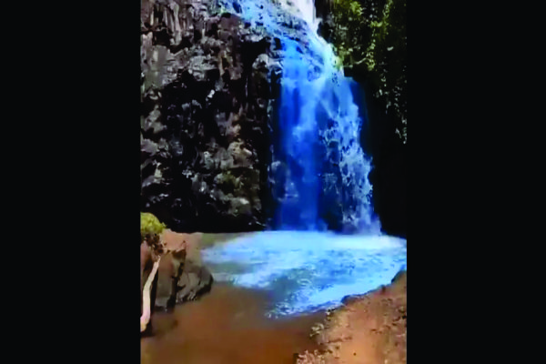

NEWS | |||
Com avanço do desmatamento, animais do Cerrado e da Amazônia perdem até 90% do habitatSão muitas as espécies de plantas e animais da Amazônia com potencial farmacológico - ou seja, que podem ser usadas para fazer novos medicamentos ou cosméticos. As espécies de sapos da família Dendrobatidae, por exemplo, têm sabidamente peles ricas em moléculas que podem ser aproveitadas para o desenvolvimento de remédios como analgésicos. O avanço do desmatamento, contudo, pode eliminar esses e outros animais e vegetais do planeta antes que os benefícios possam ser explorados. A espécie é uma das 486 avaliadas por um estudo recente do WWF-Brasil e passado com exclusividade à BBC News Brasil. Realizado pela consultoria Gondwana e financiado pela União Europeia no âmbito do projeto Eat4Change, o levantamento cruzou os mapas do desmatamento da Amazônia e do Cerrado até 2019 com os mapas de ocorrência de espécies ameaçadas ou que vivem em áreas restritas para entender como a perda da vegetação nativa afeta essa biodiversidade. Do total, quase todas (484 de 486) perderam parte de seu habitat. Algumas viram suas áreas de ocorrência encolher em mais de 90%, como é o caso da perereca Dendropsophus rhea (93,1%), endêmica do Cerrado, e da serpente Typhlonectes cunhai (93,6%), endêmica da Amazônia. Autoridades ambientais de MT apuram possível contaminação em cachoeira tingida para “chá-revelação”A Secretaria de Estado do Meio Ambiente de Mato Grosso (Sema-MT) e a Secretaria Municipal de Meio Ambiente de Tangará da Serra, no Mato Grosso, apuram conjuntamente possíveis danos ambientais causados em uma cachoeira situada na zona rural da cidade matogrossense, que foi cenário de um “chá-revelação”, evento no qual um casal descobre o sexo da criança que esperam. A celebração aconteceu na tarde de domingo (25). Na ocasião, as águas da cachoeira foram tingidas da cor azul para indicar que o bebê esperado pelo casal é do sexo masculino. O evento foi filmado e as imagens ganharam grande repercussão nas redes sociais devido à possibilidade de danos ao ecossistema. O secretário municipal do Meio Ambiente de Tangará da Serra, Vinicius Lançone, disse à CNN que o caso foi denunciado à Prefeitura por diversos canais. Segundo ele, técnicos da secretária estiveram no local acompanhados de profissionais da Sema-MT. De antemão, a família e a empresa contratada para organizar o evento alegaram que o produto utilizado na cachoeira é biodegradável e propício para utilização em piscinas e lagos com o intuito de acentuar a coloração azul. As autoridades aguardam comprovação do produto usado na ocasião. Ainda de acordo com Lançone, representantes de ambas as secretarias se reúnem nesta terça-feira (27) com a família e a empresa que organizaram o “chá-revelação”. Os técnicos ambientais coletaram amostras para averiguar possíveis danos à fauna e à flora locais. Os resultados ainda não foram divulgados. A Sema-MT também diz aguardar o resultado de um teste da água no decorrer do riacho, que é ponto de coleta de água por outro empreendedor local. A análise também não foi concluída até o momento. Caso seja constatado algum prejuízo ao meio ambiente, os organizadores da celebração podem sofrer um processo administrativo no âmbito municipal e estão sujeitos à multa. A Sema-MT esclarece que, havendo crime ambiental, os responsáveis serão autuados e poderão responder por esta infração. Por telefone, o pai do bebê, que aparece nas filmagens, disse que o evento foi uma surpresa ao casal, que não sabia de nenhum detalhe da organização e repudiou a repercussão negativa voltada ao casal. Ele acrescenta que os organizadores estão em contato com as autoridades e podem comprovar que não houve poluição no local. A CNN entrou em contato com a empresa proprietária do terreno onde está localizada a cachoeira que aparece nas imagens, mas não obteve retorno até o momento. Austrália pretende reservar 30% do território para proteger espécies ameaçadas de extinção até 2030; vídeoA Austrália terá como meta ter “zero novas extinções” em uma tentativa de proteger plantas e animais no continente insular, que é famoso por ter espécies que não podem ser encontradas em nenhum outro lugar do mundo. Em um plano anunciado nesta terça-feira (4) por Tanya Plibersek, ministra do Meio Ambiente, o governo federal se comprometeu a “proteger 30% de nossas terras e 30% de nossos oceanos até 2030”, reservando pelo menos 30% da massa terrestre da Austrália para conservação. De acordo com a ministra, 110 espécies e 20 locais serão priorizados e um total de 50 milhões de hectares serão somados à área já conservada. O plano de 10 anos será revisto em 2027. Um relatório quinquenal divulgado em julho de 2022 pelo governo australiano mostrou que o país perdeu mais espécies de mamíferos do que qualquer outro continente e que tem uma das piores taxas de declínio de espécies entre os países mais ricos do mundo. “Nosso plano de ação para espécies ameaçadas é um plano ambicioso e específico para impedir novas extinções na Austrália. Aprendemos com o Relatório do Estado do Meio Ambiente, que publiquei há alguns meses, que o estado do meio ambiente australiano é ruim e está piorando. Somos a capital mundial da extinção de mamíferos. Vimos cerca de 100 espécies perdidas no tempo desde a colonização e absolutamente temos que mudar isso", disse a ministra. "Se continuarmos fazendo o que estamos fazendo, continuaremos obtendo os mesmos resultados.” Cinco toneladas de 'bolotas' de óleo são recolhidas em duas cidades do litoral de PernambucoCinco toneladas de óleo foram recolhidas nos municípios de Tamandaré, onde fica a praia dos Carneiros, Barreiros, no Litoral Sul de Pernambuco. O material apareceu na orla em formato de 'bolotas mais sólidas" (veja vídeo acima). A informação é do oceanógrafo Leonardo Messias. Ele é o coordenador do Centro Nacional de Pesquisa e Conservação da Biodiversidade Marinha do Nordeste (Cepene), do Instituto Chico Mendes de Conservação da Biodiversidade (ICMBio). Os primeiros resquícios do material foram avistados no fim de setembro e, no domingo (2), apareceram em maior volume. Algumas "pelotas" tinham conchas "coladas" ao piche, e até animais marinhos. Segundo os profissionais que recolheram o material, eles "colonizaram" o material. |
|||
| by: Jean TI44 | |||